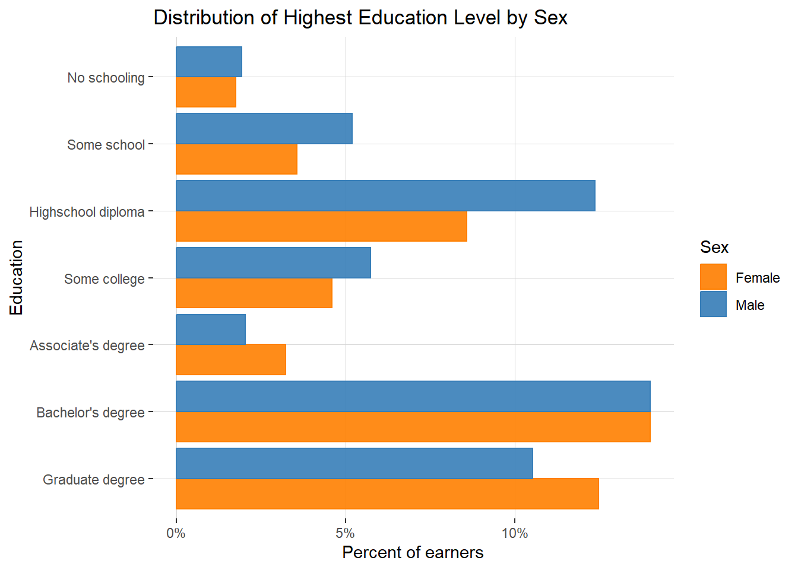

pacman::p_load(
dplyr,
ggplot2,
# Statistics
modelsummary,
srvyr,
survey,
# Webscraping
httr,
rvest,
readr,
glue,
# Census
tidycensus,
ipumsr
)In this post, I’m going to write up how to use American Community Survey (ACS) microdata, leveraging the University of Minnesota’s Integrated Public Use Microdata Series (IPUMS).1 I’ll cover:
- Data Retrieval and Processing: how to choose which ACS product is relevant, how to submit a request to IPUMS, and how to filter down to relevant levels of geography/granularity.
- Analysis: how to properly weight ACS data using sample and replication weights for accurate data visualizations and statistical models.
I’ll start with a question: What was the median household income in Oakland, California in 2022?
Aggregate data with tidycensus
Answering that question is pretty straightforward using aggregate data from the U.S. Census, which provides various descriptive statistics describing aggregate geographies. If I needed to get the number quickly and wasn’t using it for analysis, I might use a web-based tool like Census Reporter to quickly look it up. However, for an analysis, I would like the data retrieval to be replicable and carried out transparently via an API.
In R, the tidycensus package provides an easy-to-use wrapper for requesting data from the Census API. Note that I set up an API key for the U.S. Census and am storing it in my .Renviron file.
census_api_key(Sys.getenv("census_api_key"))I can query B19013_001, the median household income variable, using the 2022 1-year American Community Survey sample2 and filter down to Oakland’s GEOID, 0653000, which is a combination of the state code for California, 06, and the place code for Oakland, 53000. I’ll throw in the total population variable for good measure:
oakland_stats <- get_acs(
geography = "place",
variables = c(
median_hh_income = "B19013_001",
total_pop = "B17001_001"
),
state = "CA",
year = 2022,
survey = "acs1"
)
oakland_stats <- oakland_stats %>% filter(GEOID == '0653000')
oakland_stats %>% select(c(variable, estimate))| variable | estimate |
|---|---|
| total_pop | 426323 |
| median_hh_income | 93146 |
Done! This is an example of retrieving aggregate census data – in this case a statistic describing the population of Oakland. Aggregate census data is very useful, and (Walker 2023) offers a comprehensive treatment of use cases of aggregate census data.
Limitations
What if instead of the median, I wanted a different quantile of household income? What if I wanted to run a regression and find the association between sex and individual income while adjusting for education? These statistics are not obviously available as aggregate measures in the Census API. Indeed, if I want them, I need to calculate them myself using either individual or household level census data, as-in, data where each row is an individual person or an individual household (depending on your population of interest). This is a common need and entails accessing census microdata, a complicated process that I’ll cover now.
IPUMS microdata overview
One of the most popular sources for downloading census microdata is the University of Minnesota’s Integrated Public Use Microdata Series (IPUMS). The IPUMS team provides a centralized API for downloading census microdata, comprehensive documentation for working with census microdata, and harmonized variables across time (Walker 2023, chap. 9). The easiest way to access IPUMS data in R is with the ipumsr package, which the IPUMS team manages. Here I’ll set an API key in my .Renviron file to use for submitting requests via ipumsr .
set_ipums_api_key(Sys.getenv("ipums_api_key"))The ipumsr website provides details on what degree of support the package has for various IPUMS products, though it’s also possible to check for support using the ipums_data_collections() function. I prefer the function so that I can see exactly what code I’ll need to plug into the API (see code_for_api). The following are the survey products that currently have API support:
ipums_data_collections() %>%
filter(api_support == TRUE) %>%
arrange(desc(collection_type))| collection_name | collection_type | code_for_api | api_support |
|---|---|---|---|
| IPUMS USA | microdata | usa | TRUE |
| IPUMS CPS | microdata | cps | TRUE |
| IPUMS International | microdata | ipumsi | TRUE |
| IPUMS ATUS | microdata | atus | TRUE |
| IPUMS AHTUS | microdata | ahtus | TRUE |
| IPUMS MTUS | microdata | mtus | TRUE |
| IPUMS NHIS | microdata | nhis | TRUE |
| IPUMS MEPS | microdata | meps | TRUE |
| IPUMS NHGIS | aggregate data | nhgis | TRUE |
For any analysis of populations in the U.S., the IPUMS USA (annual survey products) and IPUMS CPS (a monthly survey product) collections are of particular interest. I’ll look at IPUMS USA since my motivating question involves median household income for a year – 2022.
The IPUMS USA project collects, preserves and harmonizes U.S. census microdata and provides easy access to this data with enhanced documentation. Data includes decennial censuses from 1790 to 2010 and American Community Surveys (ACS) from 2000 to the present (Ruggles et al. 2024). We can check out the newest products they have in the USA collection as follows:
get_sample_info(collection="usa") %>%
arrange(desc(name)) %>%
head(5)| name | description |
|---|---|
| us2023b | 2023 PRCS |
| us2023a | 2023 ACS |
| us2022d | 2018-2022, PRCS 5-year |
| us2022c | 2018-2022, ACS 5-year |
| us2022b | 2022 PRCS |
Some things to note about these collections:
ACS vs. PRCS: The ACS (American Community Survey) collects detailed population and housing information for the 50 U.S. states and The District of Columbia, whereas the PRCS (Puerto Rico Community Survey) functions as an ACS equivalent specifically tailored to collect data in Puerto Rico.
One-Year vs. Five-Year Estimates:
One-Year Estimates (e.g. “2022 ACS”) are based on data collected over a single year; they provide timely information for areas with populations of 65,000 or more (this excludes some small geographies)3 but may have higher margins of error for smaller areas.
Five-Year Estimates represent a moving average of data collected over a 5-year period and covers geographies down to the Census block group. The 5-year window creates a larger sample size and offers more reliable and detailed information for all population sizes, including small areas, but is less timely than one-year estimates (Walker 2023).
Retrieving data from IPUMS USA
Let’s return to the motivating question for this post: What was the median household income in Oakland, California in 2022?
We’ll need to get income data from the 2022 1-year ACS, and we will need to filter our data down to just the city of Oakland. For the first task, I’ll define a general function, retrieve_sample() that retrieves a list of variables from a given ACS sample.
retrieve_sample <- function(sample, variables){
extract <- define_extract_micro(
description = "Incomes by PUMA",
collection = "usa",
samples = c(sample),
variables = variables
)
data_path <- extract %>%
submit_extract() %>%
wait_for_extract() %>%
download_extract(download_dir = here::here("data"),
overwrite = TRUE)
data <- read_ipums_micro(data_path)
return(data)
}I’ll also define a list of variables that I want, including HHINCOME (household income) and INCTOT (individual income). Some of these variables refer to census-specific language – i.e. PUMA , REPWT , REPWTP. I’ll cover exactly what each of these represent later in the post.
variables <- list(
"PUMA",
"AGE",
"SEX",
"EDUC",
"HHINCOME",
"INCTOT",
"REPWT",
"REPWTP",
var_spec("STATEFIP",
case_selections = "06")
)Note the variable, var_spec("STATEFIP", case_selections = "06"). This selects the variable STATEFIP, while also specifying that we want to restrict our request to data where STATEFIP=='06' (California). Generally, var_spec() is used to provide specifications for individual variables when defining an IPUMS microdata extract request (Greg Freedman Ellis, Derek Burk, and Finn Roberts 2024).
Now we can request these variables from the 2022 1-year ACS via the following function call:
retrieve_sample("us2022a", variables)
However, I’ll first write code that checks if I’ve already downloaded the data before running the query to avoid running it unnecessarily (the query can take some time).
local_ipums_extracts <- list.files(
path = here::here('data'),
pattern = "\\.xml$",
full.names = TRUE)
if (length(local_ipums_extracts) > 0) {
existing_path <- local_ipums_extracts[1]
data <- read_ipums_micro(existing_path)
} else {
data <- retrieve_sample("us2022a", variables)
}Here’s the resulting data, the 2022 1-year ACS for California.
data %>% head()| YEAR | SAMPLE | SERIAL | CBSERIAL | HHWT | REPWT | CLUSTER | STATEFIP | PUMA | STRATA | GQ | HHINCOME | REPWT1 | REPWT2 | REPWT3 | REPWT4 | REPWT5 | REPWT6 | REPWT7 | REPWT8 | REPWT9 | REPWT10 | REPWT11 | REPWT12 | REPWT13 | REPWT14 | REPWT15 | REPWT16 | REPWT17 | REPWT18 | REPWT19 | REPWT20 | REPWT21 | REPWT22 | REPWT23 | REPWT24 | REPWT25 | REPWT26 | REPWT27 | REPWT28 | REPWT29 | REPWT30 | REPWT31 | REPWT32 | REPWT33 | REPWT34 | REPWT35 | REPWT36 | REPWT37 | REPWT38 | REPWT39 | REPWT40 | REPWT41 | REPWT42 | REPWT43 | REPWT44 | REPWT45 | REPWT46 | REPWT47 | REPWT48 | REPWT49 | REPWT50 | REPWT51 | REPWT52 | REPWT53 | REPWT54 | REPWT55 | REPWT56 | REPWT57 | REPWT58 | REPWT59 | REPWT60 | REPWT61 | REPWT62 | REPWT63 | REPWT64 | REPWT65 | REPWT66 | REPWT67 | REPWT68 | REPWT69 | REPWT70 | REPWT71 | REPWT72 | REPWT73 | REPWT74 | REPWT75 | REPWT76 | REPWT77 | REPWT78 | REPWT79 | REPWT80 | PERNUM | PERWT | REPWTP | FAMUNIT | RELATE | RELATED | SEX | AGE | EDUC | EDUCD | INCTOT | REPWTP1 | REPWTP2 | REPWTP3 | REPWTP4 | REPWTP5 | REPWTP6 | REPWTP7 | REPWTP8 | REPWTP9 | REPWTP10 | REPWTP11 | REPWTP12 | REPWTP13 | REPWTP14 | REPWTP15 | REPWTP16 | REPWTP17 | REPWTP18 | REPWTP19 | REPWTP20 | REPWTP21 | REPWTP22 | REPWTP23 | REPWTP24 | REPWTP25 | REPWTP26 | REPWTP27 | REPWTP28 | REPWTP29 | REPWTP30 | REPWTP31 | REPWTP32 | REPWTP33 | REPWTP34 | REPWTP35 | REPWTP36 | REPWTP37 | REPWTP38 | REPWTP39 | REPWTP40 | REPWTP41 | REPWTP42 | REPWTP43 | REPWTP44 | REPWTP45 | REPWTP46 | REPWTP47 | REPWTP48 | REPWTP49 | REPWTP50 | REPWTP51 | REPWTP52 | REPWTP53 | REPWTP54 | REPWTP55 | REPWTP56 | REPWTP57 | REPWTP58 | REPWTP59 | REPWTP60 | REPWTP61 | REPWTP62 | REPWTP63 | REPWTP64 | REPWTP65 | REPWTP66 | REPWTP67 | REPWTP68 | REPWTP69 | REPWTP70 | REPWTP71 | REPWTP72 | REPWTP73 | REPWTP74 | REPWTP75 | REPWTP76 | REPWTP77 | REPWTP78 | REPWTP79 | REPWTP80 |
|---|---|---|---|---|---|---|---|---|---|---|---|---|---|---|---|---|---|---|---|---|---|---|---|---|---|---|---|---|---|---|---|---|---|---|---|---|---|---|---|---|---|---|---|---|---|---|---|---|---|---|---|---|---|---|---|---|---|---|---|---|---|---|---|---|---|---|---|---|---|---|---|---|---|---|---|---|---|---|---|---|---|---|---|---|---|---|---|---|---|---|---|---|---|---|---|---|---|---|---|---|---|---|---|---|---|---|---|---|---|---|---|---|---|---|---|---|---|---|---|---|---|---|---|---|---|---|---|---|---|---|---|---|---|---|---|---|---|---|---|---|---|---|---|---|---|---|---|---|---|---|---|---|---|---|---|---|---|---|---|---|---|---|---|---|---|---|---|---|---|---|---|---|---|---|---|---|---|---|---|---|---|---|
| 2022 | 202201 | 74692 | 2.02201e+12 | 14 | 1 | 2.022001e+12 | 6 | 6509 | 650906 | 4 | 9999999 | 12 | 14 | 14 | 12 | 14 | 14 | 12 | 12 | 11 | 12 | 13 | 13 | 11 | 13 | 13 | 11 | 13 | 12 | 12 | 14 | 13 | 13 | 13 | 13 | 11 | 11 | 13 | 12 | 14 | 13 | 10 | 12 | 13 | 10 | 13 | 13 | 15 | 12 | 14 | 14 | 12 | 11 | 12 | 12 | 10 | 14 | 13 | 13 | 12 | 12 | 11 | 13 | 12 | 11 | 12 | 14 | 13 | 12 | 14 | 12 | 13 | 13 | 12 | 12 | 12 | 12 | 12 | 12 | 12 | 11 | 12 | 13 | 13 | 11 | 14 | 12 | 11 | 11 | 13 | 10 | 1 | 14 | 1 | 1 | 12 | 1270 | 2 | 56 | 6 | 64 | 14500 | 12 | 14 | 14 | 12 | 14 | 14 | 12 | 12 | 11 | 12 | 13 | 13 | 11 | 13 | 13 | 11 | 13 | 12 | 12 | 14 | 13 | 13 | 13 | 13 | 11 | 11 | 13 | 12 | 14 | 13 | 10 | 12 | 13 | 10 | 13 | 13 | 15 | 12 | 14 | 14 | 12 | 11 | 12 | 12 | 10 | 14 | 13 | 13 | 12 | 12 | 11 | 13 | 12 | 11 | 12 | 14 | 13 | 12 | 14 | 12 | 13 | 13 | 12 | 12 | 12 | 12 | 12 | 12 | 12 | 11 | 12 | 13 | 13 | 11 | 14 | 12 | 11 | 11 | 13 | 10 |
| 2022 | 202201 | 74693 | 2.02201e+12 | 27 | 1 | 2.022001e+12 | 6 | 6501 | 650106 | 3 | 9999999 | 27 | 28 | 48 | 49 | 5 | 47 | 26 | 26 | 6 | 7 | 6 | 28 | 26 | 48 | 6 | 28 | 47 | 27 | 26 | 44 | 50 | 50 | 25 | 28 | 27 | 27 | 6 | 47 | 25 | 27 | 29 | 6 | 49 | 27 | 27 | 6 | 29 | 6 | 6 | 26 | 28 | 28 | 6 | 6 | 51 | 6 | 26 | 27 | 48 | 46 | 47 | 28 | 27 | 6 | 51 | 27 | 6 | 26 | 29 | 4 | 6 | 6 | 28 | 27 | 29 | 27 | 48 | 5 | 27 | 29 | 27 | 46 | 6 | 25 | 27 | 48 | 27 | 43 | 47 | 25 | 1 | 27 | 1 | 1 | 13 | 1301 | 1 | 52 | 0 | 2 | 0 | 27 | 28 | 48 | 49 | 5 | 47 | 26 | 26 | 6 | 7 | 6 | 28 | 26 | 48 | 6 | 28 | 47 | 27 | 26 | 44 | 50 | 50 | 25 | 28 | 27 | 27 | 6 | 47 | 25 | 27 | 29 | 6 | 49 | 27 | 27 | 6 | 29 | 6 | 6 | 26 | 28 | 28 | 6 | 6 | 51 | 6 | 26 | 27 | 48 | 46 | 47 | 28 | 27 | 6 | 51 | 27 | 6 | 26 | 29 | 4 | 6 | 6 | 28 | 27 | 29 | 27 | 48 | 5 | 27 | 29 | 27 | 46 | 6 | 25 | 27 | 48 | 27 | 43 | 47 | 25 |
| 2022 | 202201 | 74694 | 2.02201e+12 | 70 | 1 | 2.022001e+12 | 6 | 8101 | 810106 | 3 | 9999999 | 19 | 11 | 11 | 59 | 71 | 71 | 71 | 71 | 78 | 91 | 89 | 91 | 19 | 57 | 80 | 89 | 70 | 78 | 90 | 11 | 20 | 12 | 11 | 58 | 70 | 71 | 71 | 71 | 80 | 91 | 90 | 91 | 18 | 60 | 79 | 89 | 70 | 79 | 89 | 92 | 80 | 92 | 90 | 90 | 71 | 72 | 69 | 71 | 20 | 11 | 11 | 59 | 80 | 92 | 19 | 58 | 71 | 18 | 58 | 90 | 79 | 90 | 90 | 90 | 70 | 69 | 70 | 71 | 20 | 12 | 10 | 57 | 78 | 91 | 20 | 58 | 71 | 20 | 56 | 12 | 1 | 70 | 1 | 1 | 13 | 1301 | 1 | 61 | 7 | 71 | 80 | 19 | 11 | 11 | 59 | 71 | 71 | 71 | 71 | 78 | 91 | 89 | 91 | 19 | 57 | 80 | 89 | 70 | 78 | 90 | 11 | 20 | 12 | 11 | 58 | 70 | 71 | 71 | 71 | 80 | 91 | 90 | 91 | 18 | 60 | 79 | 89 | 70 | 79 | 89 | 92 | 80 | 92 | 90 | 90 | 71 | 72 | 69 | 71 | 20 | 11 | 11 | 59 | 80 | 92 | 19 | 58 | 71 | 18 | 58 | 90 | 79 | 90 | 90 | 90 | 70 | 69 | 70 | 71 | 20 | 12 | 10 | 57 | 78 | 91 | 20 | 58 | 71 | 20 | 56 | 12 |
| 2022 | 202201 | 74695 | 2.02201e+12 | 22 | 1 | 2.022001e+12 | 6 | 8303 | 830306 | 4 | 9999999 | 22 | 26 | 29 | 36 | 2 | 32 | 36 | 27 | 3 | 2 | 4 | 22 | 18 | 55 | 3 | 22 | 43 | 18 | 27 | 4 | 2 | 3 | 19 | 26 | 20 | 20 | 46 | 5 | 21 | 23 | 20 | 38 | 2 | 27 | 23 | 45 | 20 | 31 | 53 | 20 | 20 | 20 | 54 | 42 | 6 | 49 | 16 | 19 | 3 | 3 | 4 | 21 | 27 | 33 | 4 | 25 | 37 | 29 | 18 | 2 | 4 | 3 | 29 | 18 | 27 | 28 | 34 | 2 | 26 | 23 | 22 | 38 | 5 | 19 | 21 | 35 | 25 | 56 | 30 | 24 | 1 | 22 | 1 | 1 | 12 | 1270 | 2 | 26 | 7 | 71 | 9000 | 22 | 26 | 29 | 36 | 2 | 32 | 36 | 27 | 3 | 2 | 4 | 22 | 18 | 55 | 3 | 22 | 43 | 18 | 27 | 4 | 2 | 3 | 19 | 26 | 20 | 20 | 46 | 5 | 21 | 23 | 20 | 38 | 2 | 27 | 23 | 45 | 20 | 31 | 53 | 20 | 20 | 20 | 54 | 42 | 6 | 49 | 16 | 19 | 3 | 3 | 4 | 21 | 27 | 33 | 4 | 25 | 37 | 29 | 18 | 2 | 4 | 3 | 29 | 18 | 27 | 28 | 34 | 2 | 26 | 23 | 22 | 38 | 5 | 19 | 21 | 35 | 25 | 56 | 30 | 24 |
| 2022 | 202201 | 74696 | 2.02201e+12 | 8 | 1 | 2.022001e+12 | 6 | 6712 | 671206 | 3 | 9999999 | 9 | 15 | 10 | 8 | 8 | 2 | 2 | 8 | 2 | 15 | 1 | 16 | 8 | 14 | 15 | 10 | 8 | 7 | 9 | 10 | 14 | 9 | 3 | 16 | 16 | 9 | 10 | 1 | 7 | 8 | 8 | 8 | 3 | 9 | 10 | 16 | 15 | 1 | 1 | 8 | 16 | 9 | 2 | 15 | 15 | 9 | 8 | 1 | 8 | 8 | 8 | 8 | 1 | 9 | 8 | 15 | 16 | 3 | 2 | 2 | 8 | 15 | 8 | 8 | 8 | 1 | 1 | 9 | 2 | 16 | 3 | 15 | 8 | 14 | 17 | 9 | 8 | 8 | 8 | 3 | 1 | 8 | 1 | 1 | 13 | 1301 | 2 | 38 | 6 | 63 | 48000 | 9 | 15 | 10 | 8 | 8 | 2 | 2 | 8 | 2 | 15 | 1 | 16 | 8 | 14 | 15 | 10 | 8 | 7 | 9 | 10 | 14 | 9 | 3 | 16 | 16 | 9 | 10 | 1 | 7 | 8 | 8 | 8 | 3 | 9 | 10 | 16 | 15 | 1 | 1 | 8 | 16 | 9 | 2 | 15 | 15 | 9 | 8 | 1 | 8 | 8 | 8 | 8 | 1 | 9 | 8 | 15 | 16 | 3 | 2 | 2 | 8 | 15 | 8 | 8 | 8 | 1 | 1 | 9 | 2 | 16 | 3 | 15 | 8 | 14 | 17 | 9 | 8 | 8 | 8 | 3 |
| 2022 | 202201 | 74697 | 2.02201e+12 | 49 | 1 | 2.022001e+12 | 6 | 7301 | 730106 | 4 | 9999999 | 52 | 51 | 47 | 5 | 79 | 45 | 45 | 4 | 49 | 5 | 3 | 103 | 91 | 53 | 49 | 49 | 46 | 5 | 102 | 88 | 47 | 48 | 55 | 4 | 98 | 49 | 47 | 5 | 44 | 5 | 3 | 93 | 104 | 48 | 54 | 46 | 53 | 4 | 103 | 3 | 46 | 50 | 51 | 93 | 4 | 48 | 50 | 77 | 49 | 93 | 108 | 5 | 4 | 46 | 47 | 51 | 57 | 89 | 4 | 4 | 54 | 42 | 56 | 101 | 4 | 45 | 55 | 94 | 48 | 96 | 99 | 5 | 4 | 42 | 49 | 47 | 50 | 75 | 4 | 90 | 1 | 49 | 1 | 1 | 12 | 1270 | 1 | 23 | 6 | 63 | 24000 | 52 | 51 | 47 | 5 | 79 | 45 | 45 | 4 | 49 | 5 | 3 | 103 | 91 | 53 | 49 | 49 | 46 | 5 | 102 | 88 | 47 | 48 | 55 | 4 | 98 | 49 | 47 | 5 | 44 | 5 | 3 | 93 | 104 | 48 | 54 | 46 | 53 | 4 | 103 | 3 | 46 | 50 | 51 | 93 | 4 | 48 | 50 | 77 | 49 | 93 | 108 | 5 | 4 | 46 | 47 | 51 | 57 | 89 | 4 | 4 | 54 | 42 | 56 | 101 | 4 | 45 | 55 | 94 | 48 | 96 | 99 | 5 | 4 | 42 | 49 | 47 | 50 | 75 | 4 | 90 |
Using Geocorr to Identify Geographies
We now have microdata for all of California, but how do we filter down to just Oakland? Unfortunately, this isn’t as simple as just running filter(CITY == 'Oakland') – ACS microdata does not include a field for explicitly identifying cities (note that a city is typically referred to as a “place” in census data). Indeed, the smallest geographic area explicitly identified in the microdata is something called a public use microdata area (PUMA), a geographic area defined based on population (Pastoor 2024). PUMAS are unique geographies – they always correspond to states, but only sometimes correspond to other small geographic areas, such as city, metro area, and county (See Census Hierarchies in Walker 2023, chap. 1).
To find out if a city corresponds to a collection of PUMAs and which PUMAs those are, we’ll use a tool called Geocorr (geographic correspondence engine), an application that generates files and/or reports — called correlation lists — showing relationships between two or more geographic coverages in the United States (Mihalik, Rice, and Hesser 2022). Geocorr is a sponsored program of the Missouri State library and published by the University of Missouri Center for Health Policy.4

For example, suppose you have county-level data for California and would like to convert that data to the ZIP code level. Geocorr can show how each county relates to the ZIP code(s) that intersect it. It can tell you, for each of those ZIP/county intersections, what the size of that intersection is and what portion of the ZIP’s total population is in that intersection (Mihalik, Rice, and Hesser 2022).
Here I’ll define a function, geocorr_2022() that queries Geocorr 2022 and retrieves a .csv file establishing the relationships between two sets of geographies in a given state.
geocorr_2022 <- function(state, geo_1, geo_2, weight_var) {
base_url <- "https://mcdc.missouri.edu"
params <- glue(
"cgi-bin/broker?_PROGRAM=apps.geocorr2022.sas&",
"_SERVICE=MCDC_long&_debug=0&",
"state={state}&g1_={geo_1}&g2_={geo_2}&wtvar={weight_var}&",
"nozerob=1&fileout=1&filefmt=csv&lstfmt=txt&title=&",
"counties=&metros=&places=&oropt=&latitude=&longitude=&",
"distance=&kiloms=0&locname="
)
initial_url <- params %>% url_absolute(base = base_url)
initial_response <- GET(initial_url)
html_content <- content(initial_response, as = "text")
parsed_html <- read_html(html_content)
# Extract the one link
csv_url <- parsed_html %>%
html_node("a") %>%
html_attr("href") %>%
stringr::str_trim() %>%
url_absolute(base = base_url)
csv_data <- read_csv(csv_url)
return(csv_data)
}We’ll use that function to establish the relationships between California’s 2022 PUMAs and its “places,” using individual population as measured in the 2020 Decenial Census to weight the relationships.
csv_data <- geocorr_2022("Ca06", "puma22", "place", "pop20")With that, we can whether Oakland can be represented as a collection of PUMAs, and, if so, which PUMAs make up the city.
csv_data %>%
select(-c(state, stab, place)) %>%
filter(PlaceName == 'Oakland city, CA')| puma22 | PlaceName | PUMA22name | pop20 | afact |
|---|---|---|---|---|
| 00111 | Oakland city, CA | Alameda County (Northwest)–Oakland City (Downtown/West Oakland/North Oakland) | 106433 | 1 |
| 00112 | Oakland city, CA | Alameda County (Northwest)–Oakland City (Oakland Hills) | 106896 | 1 |
| 00113 | Oakland city, CA | Alameda County (West)–Oakland City (Elmhurst/Central/East Oakland) | 125840 | 1 |
| 00114 | Oakland city, CA | Alameda County (West)–San Leandro, Alameda, Emeryville & Piedmont Cities | 9 | 0 |
| 00123 | Oakland city, CA | Alameda County (Northwest)–Oakland City (San Antonio/Fruitvale) | 101468 | 1 |
The AFACT (allocation factor) column shows the proportion of the source area contained in the target area – this case the proportion of the PUMA population that belongs to Oakland. In this case, 100% of the populations in PUMAs 111, 112, 113, and 123 belong to Oakland, and 0% of PUMA 114. To be clear, GEOCORR believes that 9 individuals from 114 do live in Oakland, but based on the AFACT I’ll feel comfortable dropping that PUMA.5
Filtering to those PUMAs gets us the 2022 1-year ACS microdata for the City of Oakland.
oakland_pumas <- c(111, 112, 113, 123)
oak <- data %>%
filter(PUMA %in% oakland_pumas) %>%
haven::zap_labels()
oak %>% head()| YEAR | SAMPLE | SERIAL | CBSERIAL | HHWT | REPWT | CLUSTER | STATEFIP | PUMA | STRATA | GQ | HHINCOME | REPWT1 | REPWT2 | REPWT3 | REPWT4 | REPWT5 | REPWT6 | REPWT7 | REPWT8 | REPWT9 | REPWT10 | REPWT11 | REPWT12 | REPWT13 | REPWT14 | REPWT15 | REPWT16 | REPWT17 | REPWT18 | REPWT19 | REPWT20 | REPWT21 | REPWT22 | REPWT23 | REPWT24 | REPWT25 | REPWT26 | REPWT27 | REPWT28 | REPWT29 | REPWT30 | REPWT31 | REPWT32 | REPWT33 | REPWT34 | REPWT35 | REPWT36 | REPWT37 | REPWT38 | REPWT39 | REPWT40 | REPWT41 | REPWT42 | REPWT43 | REPWT44 | REPWT45 | REPWT46 | REPWT47 | REPWT48 | REPWT49 | REPWT50 | REPWT51 | REPWT52 | REPWT53 | REPWT54 | REPWT55 | REPWT56 | REPWT57 | REPWT58 | REPWT59 | REPWT60 | REPWT61 | REPWT62 | REPWT63 | REPWT64 | REPWT65 | REPWT66 | REPWT67 | REPWT68 | REPWT69 | REPWT70 | REPWT71 | REPWT72 | REPWT73 | REPWT74 | REPWT75 | REPWT76 | REPWT77 | REPWT78 | REPWT79 | REPWT80 | PERNUM | PERWT | REPWTP | FAMUNIT | RELATE | RELATED | SEX | AGE | EDUC | EDUCD | INCTOT | REPWTP1 | REPWTP2 | REPWTP3 | REPWTP4 | REPWTP5 | REPWTP6 | REPWTP7 | REPWTP8 | REPWTP9 | REPWTP10 | REPWTP11 | REPWTP12 | REPWTP13 | REPWTP14 | REPWTP15 | REPWTP16 | REPWTP17 | REPWTP18 | REPWTP19 | REPWTP20 | REPWTP21 | REPWTP22 | REPWTP23 | REPWTP24 | REPWTP25 | REPWTP26 | REPWTP27 | REPWTP28 | REPWTP29 | REPWTP30 | REPWTP31 | REPWTP32 | REPWTP33 | REPWTP34 | REPWTP35 | REPWTP36 | REPWTP37 | REPWTP38 | REPWTP39 | REPWTP40 | REPWTP41 | REPWTP42 | REPWTP43 | REPWTP44 | REPWTP45 | REPWTP46 | REPWTP47 | REPWTP48 | REPWTP49 | REPWTP50 | REPWTP51 | REPWTP52 | REPWTP53 | REPWTP54 | REPWTP55 | REPWTP56 | REPWTP57 | REPWTP58 | REPWTP59 | REPWTP60 | REPWTP61 | REPWTP62 | REPWTP63 | REPWTP64 | REPWTP65 | REPWTP66 | REPWTP67 | REPWTP68 | REPWTP69 | REPWTP70 | REPWTP71 | REPWTP72 | REPWTP73 | REPWTP74 | REPWTP75 | REPWTP76 | REPWTP77 | REPWTP78 | REPWTP79 | REPWTP80 |
|---|---|---|---|---|---|---|---|---|---|---|---|---|---|---|---|---|---|---|---|---|---|---|---|---|---|---|---|---|---|---|---|---|---|---|---|---|---|---|---|---|---|---|---|---|---|---|---|---|---|---|---|---|---|---|---|---|---|---|---|---|---|---|---|---|---|---|---|---|---|---|---|---|---|---|---|---|---|---|---|---|---|---|---|---|---|---|---|---|---|---|---|---|---|---|---|---|---|---|---|---|---|---|---|---|---|---|---|---|---|---|---|---|---|---|---|---|---|---|---|---|---|---|---|---|---|---|---|---|---|---|---|---|---|---|---|---|---|---|---|---|---|---|---|---|---|---|---|---|---|---|---|---|---|---|---|---|---|---|---|---|---|---|---|---|---|---|---|---|---|---|---|---|---|---|---|---|---|---|---|---|---|---|
| 2022 | 202201 | 74718 | 2.02201e+12 | 5 | 1 | 2.022001e+12 | 6 | 111 | 11106 | 3 | 9999999 | 5 | 4 | 5 | 4 | 5 | 5 | 5 | 2 | 6 | 5 | 5 | 3 | 5 | 2 | 2 | 5 | 4 | 4 | 4 | 5 | 4 | 4 | 5 | 5 | 4 | 5 | 5 | 2 | 2 | 2 | 5 | 4 | 5 | 3 | 3 | 4 | 5 | 5 | 4 | 3 | 5 | 5 | 4 | 5 | 5 | 5 | 4 | 2 | 5 | 4 | 4 | 4 | 5 | 2 | 3 | 4 | 5 | 5 | 4 | 5 | 5 | 4 | 5 | 5 | 4 | 5 | 5 | 2 | 2 | 3 | 3 | 4 | 4 | 2 | 2 | 5 | 4 | 4 | 5 | 4 | 1 | 5 | 1 | 1 | 13 | 1301 | 1 | 20 | 7 | 71 | 0 | 5 | 4 | 5 | 4 | 5 | 5 | 5 | 2 | 6 | 5 | 5 | 3 | 5 | 2 | 2 | 5 | 4 | 4 | 4 | 5 | 4 | 4 | 5 | 5 | 4 | 5 | 5 | 2 | 2 | 2 | 5 | 4 | 5 | 3 | 3 | 4 | 5 | 5 | 4 | 3 | 5 | 5 | 4 | 5 | 5 | 5 | 4 | 2 | 5 | 4 | 4 | 4 | 5 | 2 | 3 | 4 | 5 | 5 | 4 | 5 | 5 | 4 | 5 | 5 | 4 | 5 | 5 | 2 | 2 | 3 | 3 | 4 | 4 | 2 | 2 | 5 | 4 | 4 | 5 | 4 |
| 2022 | 202201 | 74737 | 2.02201e+12 | 56 | 1 | 2.022001e+12 | 6 | 111 | 11106 | 3 | 9999999 | 6 | 81 | 56 | 66 | 67 | 81 | 65 | 7 | 55 | 80 | 79 | 11 | 55 | 83 | 43 | 12 | 6 | 42 | 56 | 56 | 7 | 82 | 56 | 65 | 66 | 79 | 65 | 7 | 56 | 81 | 80 | 12 | 55 | 83 | 42 | 12 | 6 | 43 | 55 | 55 | 7 | 82 | 55 | 68 | 68 | 81 | 67 | 6 | 56 | 78 | 80 | 12 | 55 | 82 | 43 | 11 | 6 | 42 | 56 | 54 | 6 | 82 | 56 | 66 | 67 | 78 | 67 | 6 | 56 | 81 | 80 | 12 | 55 | 82 | 44 | 12 | 7 | 43 | 54 | 55 | 1 | 56 | 1 | 1 | 13 | 1301 | 1 | 56 | 6 | 63 | 480 | 6 | 81 | 56 | 66 | 67 | 81 | 65 | 7 | 55 | 80 | 79 | 11 | 55 | 83 | 43 | 12 | 6 | 42 | 56 | 56 | 7 | 82 | 56 | 65 | 66 | 79 | 65 | 7 | 56 | 81 | 80 | 12 | 55 | 83 | 42 | 12 | 6 | 43 | 55 | 55 | 7 | 82 | 55 | 68 | 68 | 81 | 67 | 6 | 56 | 78 | 80 | 12 | 55 | 82 | 43 | 11 | 6 | 42 | 56 | 54 | 6 | 82 | 56 | 66 | 67 | 78 | 67 | 6 | 56 | 81 | 80 | 12 | 55 | 82 | 44 | 12 | 7 | 43 | 54 | 55 |
| 2022 | 202201 | 74738 | 2.02201e+12 | 15 | 1 | 2.022001e+12 | 6 | 113 | 11306 | 4 | 9999999 | 15 | 13 | 15 | 15 | 15 | 15 | 14 | 15 | 13 | 15 | 15 | 15 | 14 | 15 | 15 | 13 | 14 | 13 | 15 | 17 | 13 | 15 | 17 | 15 | 14 | 13 | 14 | 14 | 17 | 15 | 14 | 14 | 15 | 12 | 14 | 15 | 16 | 15 | 15 | 16 | 13 | 15 | 15 | 15 | 14 | 15 | 13 | 14 | 13 | 13 | 12 | 14 | 15 | 12 | 13 | 15 | 16 | 15 | 15 | 12 | 13 | 15 | 15 | 15 | 15 | 14 | 15 | 15 | 14 | 15 | 15 | 15 | 15 | 15 | 16 | 13 | 14 | 12 | 14 | 13 | 1 | 15 | 1 | 1 | 12 | 1270 | 1 | 34 | 6 | 63 | 1200 | 15 | 13 | 15 | 15 | 15 | 15 | 14 | 15 | 13 | 15 | 15 | 15 | 14 | 15 | 15 | 13 | 14 | 13 | 15 | 17 | 13 | 15 | 17 | 15 | 14 | 13 | 14 | 14 | 17 | 15 | 14 | 14 | 15 | 12 | 14 | 15 | 16 | 15 | 15 | 16 | 13 | 15 | 15 | 15 | 14 | 15 | 13 | 14 | 13 | 13 | 12 | 14 | 15 | 12 | 13 | 15 | 16 | 15 | 15 | 12 | 13 | 15 | 15 | 15 | 15 | 14 | 15 | 15 | 14 | 15 | 15 | 15 | 15 | 15 | 16 | 13 | 14 | 12 | 14 | 13 |
| 2022 | 202201 | 75005 | 2.02201e+12 | 38 | 1 | 2.022001e+12 | 6 | 113 | 11306 | 4 | 9999999 | 36 | 38 | 36 | 37 | 35 | 36 | 38 | 39 | 33 | 39 | 37 | 37 | 37 | 37 | 37 | 36 | 37 | 35 | 39 | 37 | 37 | 34 | 36 | 37 | 38 | 35 | 36 | 35 | 39 | 35 | 36 | 34 | 38 | 37 | 36 | 38 | 36 | 36 | 36 | 36 | 35 | 36 | 39 | 36 | 36 | 37 | 37 | 37 | 38 | 35 | 33 | 38 | 36 | 34 | 36 | 37 | 35 | 37 | 37 | 36 | 35 | 39 | 37 | 39 | 37 | 38 | 38 | 36 | 37 | 37 | 37 | 35 | 37 | 37 | 35 | 37 | 35 | 37 | 37 | 37 | 1 | 38 | 1 | 1 | 12 | 1270 | 2 | 40 | 2 | 23 | 41300 | 36 | 38 | 36 | 37 | 35 | 36 | 38 | 39 | 33 | 39 | 37 | 37 | 37 | 37 | 37 | 36 | 37 | 35 | 39 | 37 | 37 | 34 | 36 | 37 | 38 | 35 | 36 | 35 | 39 | 35 | 36 | 34 | 38 | 37 | 36 | 38 | 36 | 36 | 36 | 36 | 35 | 36 | 39 | 36 | 36 | 37 | 37 | 37 | 38 | 35 | 33 | 38 | 36 | 34 | 36 | 37 | 35 | 37 | 37 | 36 | 35 | 39 | 37 | 39 | 37 | 38 | 38 | 36 | 37 | 37 | 37 | 35 | 37 | 37 | 35 | 37 | 35 | 37 | 37 | 37 |
| 2022 | 202201 | 75119 | 2.02201e+12 | 20 | 1 | 2.022001e+12 | 6 | 111 | 11106 | 3 | 9999999 | 22 | 21 | 21 | 22 | 20 | 20 | 21 | 21 | 20 | 22 | 22 | 22 | 20 | 22 | 21 | 21 | 22 | 22 | 20 | 22 | 22 | 22 | 22 | 22 | 20 | 21 | 20 | 22 | 21 | 21 | 20 | 22 | 21 | 22 | 22 | 20 | 21 | 22 | 22 | 22 | 20 | 22 | 22 | 22 | 21 | 21 | 22 | 22 | 21 | 22 | 21 | 20 | 22 | 21 | 20 | 20 | 22 | 23 | 21 | 22 | 22 | 22 | 22 | 20 | 20 | 22 | 22 | 21 | 22 | 22 | 22 | 21 | 20 | 22 | 22 | 20 | 20 | 22 | 22 | 22 | 1 | 20 | 1 | 1 | 13 | 1301 | 2 | 88 | 2 | 23 | 5800 | 22 | 21 | 21 | 22 | 20 | 20 | 21 | 21 | 20 | 22 | 22 | 22 | 20 | 22 | 21 | 21 | 22 | 22 | 20 | 22 | 22 | 22 | 22 | 22 | 20 | 21 | 20 | 22 | 21 | 21 | 20 | 22 | 21 | 22 | 22 | 20 | 21 | 22 | 22 | 22 | 20 | 22 | 22 | 22 | 21 | 21 | 22 | 22 | 21 | 22 | 21 | 20 | 22 | 21 | 20 | 20 | 22 | 23 | 21 | 22 | 22 | 22 | 22 | 20 | 20 | 22 | 22 | 21 | 22 | 22 | 22 | 21 | 20 | 22 | 22 | 20 | 20 | 22 | 22 | 22 |
| 2022 | 202201 | 75131 | 2.02201e+12 | 11 | 1 | 2.022001e+12 | 6 | 123 | 12306 | 3 | 9999999 | 12 | 0 | 8 | 20 | 8 | 0 | 1 | 14 | 14 | 1 | 16 | 11 | 13 | 20 | 8 | 14 | 0 | 8 | 13 | 12 | 11 | 15 | 8 | 1 | 10 | 13 | 17 | 15 | 12 | 19 | 1 | 12 | 0 | 1 | 8 | 1 | 16 | 8 | 12 | 10 | 11 | 1 | 9 | 21 | 7 | 0 | 1 | 13 | 14 | 1 | 16 | 10 | 13 | 18 | 10 | 13 | 1 | 9 | 14 | 11 | 10 | 13 | 9 | 1 | 9 | 15 | 17 | 15 | 13 | 19 | 0 | 14 | 0 | 1 | 9 | 1 | 16 | 9 | 11 | 9 | 1 | 11 | 1 | 1 | 13 | 1301 | 2 | 86 | 2 | 23 | 0 | 12 | 0 | 8 | 20 | 8 | 0 | 1 | 14 | 14 | 1 | 16 | 11 | 13 | 20 | 8 | 14 | 0 | 8 | 13 | 12 | 11 | 15 | 8 | 1 | 10 | 13 | 17 | 15 | 12 | 19 | 1 | 12 | 0 | 1 | 8 | 1 | 16 | 8 | 12 | 10 | 11 | 1 | 9 | 21 | 7 | 0 | 1 | 13 | 14 | 1 | 16 | 10 | 13 | 18 | 10 | 13 | 1 | 9 | 14 | 11 | 10 | 13 | 9 | 1 | 9 | 15 | 17 | 15 | 13 | 19 | 0 | 14 | 0 | 1 | 9 | 1 | 16 | 9 | 11 | 9 |
But what do these data actually represent?
Granularity in ACS microdata
Each row in the ACS microdata is an individual, identified by a unique combination of SERIAL, the unique identifier for their household, and PERNUM, their unique identifier within their household. Thus, we can identify units as follows:
- Households: The combination of
SAMPLEandSERIALprovides a unique identifier for every household in the IPUMS
- Individuals: The combination of
SAMPLE,SERIAL, andPERNUMprovides a unique identifier for every person in the IPUMS
Where SAMPLE defines when the individual was surveyed (in the 1-year ACS it’s the same for all rows) (See SERIAL in Ruggles et al. 2024).
We can group by these variable combinations and see how many individuals and households were surveyed across PUMAs in Oakland for the 2022 1-year ACS:
oak %>% group_by(PUMA) %>% summarise(
n_rows = n(),
n_individuals = n_distinct(SAMPLE, SERIAL, PERNUM),
n_households = n_distinct(SAMPLE, SERIAL)
)| PUMA | n_rows | n_individuals | n_households |
|---|---|---|---|
| 111 | 1083 | 1083 | 578 |
| 112 | 1152 | 1152 | 547 |
| 113 | 989 | 989 | 385 |
| 123 | 905 | 905 | 389 |
Let’s randomly select a household in the data and see what such a unit looks like in practice.
Code
household_serials <- oak %>%
group_by(SERIAL) %>%
count() %>%
filter(n > 1) %>%
pull(SERIAL)
set.seed(2)
sample_household <- sample(household_serials, 1)
n <- oak %>% filter(SERIAL == sample_household) %>% dim() %>% .[1]oak %>% filter(SERIAL == sample_household) %>%
select(c(SERIAL, PERNUM, AGE, SEX, HHINCOME, INCTOT))| SERIAL | PERNUM | AGE | SEX | HHINCOME | INCTOT |
|---|---|---|---|---|---|
| 211975 | 1 | 31 | 2 | 27300 | 9300 |
| 211975 | 2 | 13 | 1 | 27300 | 9999999 |
| 211975 | 3 | 3 | 2 | 27300 | 9999999 |
| 211975 | 4 | 27 | 1 | 27300 | 18000 |
So here we can see that this household, with SERIAL 211975 has 4 members, each with a unique PERNUM.
Let’s return to the motivating question – what was the median household income in Oakland, California in 2022? Here we have a household in Oakland and we can see their individual and household incomes:
INCTOTreports each respondent’s total pre-tax personal income or losses from all sources for the previous year.9999999is code to denote that the value is missing, which makes sense given that the missing values above correspond to children in the household (See INCTOT in Ruggles et al. 2024).HHINCOMEreports the total money income of all household members age 15+ during the previous year. The amount should equal the sum of all household members’ individual incomes, as recorded in the person-record variable INCTOT (See HHINCOME in Ruggles et al. 2024)
Given what we know about the unique identifier for households, and the HHINCOME variable, we can construct the appropriate dataset for answering our motivating question:
oak_households <- oak %>%
distinct(SAMPLE, SERIAL, .keep_all = TRUE)
households_w_income <- oak_households %>%
filter(HHINCOME != 9999999, HHINCOME >= 0)It seems we can proceed to simply calculate the median of the HHINCOME column? Not so fast… Data in the ACS microdata are not what they seem. Before we do any analysis, we have to account for sample weights.
Applying sample weights in the ACS
Let’s return to our sample family from above, but also examine the variables PERWT and HHWT.
oak %>% filter(SERIAL == sample_household) %>%
select(c(AGE, SEX, HHINCOME, INCTOT, PERWT, HHWT))| AGE | SEX | HHINCOME | INCTOT | PERWT | HHWT |
|---|---|---|---|---|---|
| 31 | 2 | 27300 | 9300 | 62 | 62 |
| 13 | 1 | 27300 | 9999999 | 60 | 62 |
| 3 | 2 | 27300 | 9999999 | 120 | 62 |
| 27 | 1 | 27300 | 18000 | 63 | 62 |
These are the two primary sample weights in ACS microdata, and they can be interpreted fairly directly. PERWT gives the population represented by each individual in the sample, thus in the first row of the sample household, the 31 year old woman with an individual income of $9,300 represents 62 individuals in the PUMA. HHWT gives the number of households in the general population represented by each household in the sample, thus this household is representative of 62 households in that PUMA.
Any person-level analysis of ACS microdata should be weighted by PERWT, and household-level analysis should be weighted by HHWT (See Sample Weights in Ruggles et al. 2024). We’ll use the srvyr package for easily defining the survey weights and using them in calculating summary statistics. Here we’ll finally address the motivating question. The median household income in Oakland in 2022 as measured in the IPUMS microdata was as follows:
households_w_income %>%
as_survey(weights=HHWT) %>%
summarise(weighted_median = survey_median(HHINCOME)) %>%
select(weighted_median)| weighted_median |
|---|
| 89000 |
Comparing microdata with aggregate results
Let’s do a quick comparison of our IPUMS results to the aggregate census data we retrieved in the first section. Here are our full IPUMS results for median household income and population:
Code
median_table <- households_w_income %>%
as_survey(weights=HHWT) %>%
summarise(weighted_median = survey_median(HHINCOME)) %>%
mutate(variable = "Median HH Income",
ipums_estimate = weighted_median,
se = weighted_median_se)
count_table <- oak %>%
as_survey(weights=PERWT) %>%
survey_count() %>%
mutate(variable = "Population",
ipums_estimate = n,
se = n_se)
bind_rows(count_table, median_table)%>%
select(c(variable, ipums_estimate))| variable | ipums_estimate |
|---|---|
| Population | 430052 |
| Median HH Income | 89000 |
Here are our results from the aggregate data:
oakland_stats %>%
select(c(variable, estimate)) %>%
rename(aggregate_estimate = estimate)| variable | aggregate_estimate |
|---|---|
| total_pop | 426323 |
| median_hh_income | 93146 |
These are… Clearly different. What gives? Unfortunately, summary statistics calculated using IPUMS data typically cannot match aggregate ACS figures! One major reason for this is added sampling error. Recall that the American Community Survey is a sample. A given one-year ACS is typically a 1% sample of the U.S. population, with associated sampling error. When the census makes microdata available, such as the data we have from IPUMS, they create a sample of that sample – we do not get the full 1%. This second sampling process introduces further sampling error that is not reflected in figures sourced from aggregate ACS data, which are calculated using the full ACS sample (See ACS in Ruggles et al. 2024). This introduces its own, additional sampling error, that’s not present in the aggregate ACS figures.
Beyond that sampling error, microdata estimates will also be different because the census applies various other additional data processing steps to microdata to ensure privacy and accuracy. For example, in microdata income variables are “top-coded,” meaning that particularly extreme or specific income values are clipped to ensure privacy (See ACS in Ruggles et al. 2024).
So at the end of the day, due to the way that the census processes ACS microdata before releasing it to the public, this is as close as we are going to get.
Accurate Standard Errors with Replicate Weights
If we stopped at this point, we would be able to use census microdata to accurately calculate all sorts of interesting quantities. However, there is one more subtlety to the microdata that becomes important specifically when we are calculating the standard errors of those quantities: replicate weights.
When we calculate the median household income in Oakland using the household weights, we get the standard error (se) below:
households_w_income %>%
as_survey(weights=HHWT) %>%
summarise(weighted_mean = survey_mean(HHINCOME))| weighted_mean | weighted_mean_se |
|---|---|
| 141001.2 | 4142.847 |
That is a “sample standard error” – it’s an estimate of the population standard error, based on this one sample we have.
In theory, the standard error of an estimate measures the variation of a statistic across multiple samples of a given population. Thus the true standard error of any characteristic calculated from a single sample can never be known with certainty; sample standard errors are simply estimated.
Replicate weights allow a single sample to simulate multiple samples, thus generating more informed standard error estimates that mimic the theoretical basis of standard errors while retaining all information about the complex sample design. These standard errors can then be used to obtain more precise confidence intervals and significance tests. https://usa.ipums.org/usa/repwt.shtml#q70
Here we can see what replicate weights (in this case, household replicate weights) look like in our data. Each of REPWT, 1 through 80, is a set of alternative household weights, slightly different from the “production weight,” HHWT.
households_w_income %>%
select(c(HHINCOME, HHWT, REPWT1, REPWT2, REPWT3, REPWT80)) %>%
head()| HHINCOME | HHWT | REPWT1 | REPWT2 | REPWT3 | REPWT80 |
|---|---|---|---|---|---|
| 129200 | 50 | 80 | 47 | 45 | 50 |
| 107000 | 73 | 20 | 25 | 66 | 74 |
| 138000 | 74 | 86 | 85 | 107 | 73 |
| 44800 | 41 | 12 | 43 | 12 | 44 |
| 380000 | 311 | 99 | 86 | 86 | 105 |
| 189150 | 65 | 22 | 20 | 69 | 122 |
If we calculate a statistic of interest with the production weights, then measure the deviations between that production weighted estimate and the weighted estimates we would produce with each replicate weight, we can calculate the following: \[ SE(X) = \sqrt{\frac{4}{80} \sum_{r=1}^{80} (X_r - X)^2} \] This is a standard error that leverages the replicate weights
# Calculate X_r
X_r <- vector()
for (r in 1:80){
X_r[r] <- households_w_income %>%
as_survey(weights=glue("REPWT", r)) %>%
summarise(weighted_mean = survey_mean(HHINCOME)) %>%
.$weighted_mean
}
# Calculate X
X <- households_w_income %>%
as_survey(weights=HHWT) %>%
summarise(weighted_mean = survey_mean(HHINCOME)) %>%
.$weighted_mean
# Sum over r
sqrt( (4/80) * sum( (X_r - X)^2 ) )[1] 3436.261To be clear, we don’t have to ever do that manually – survey supports specifying survey designs with replicate weights. Here is a more-or-less exact
oak_hh_svy <- as_survey_rep(
households_w_income,
weight = HHWT ,
repweights = matches("REPWT[0-9]+"),
type = "successive-difference")
oak_hh_svy %>% summarise(mean_hh_income = survey_mean(HHINCOME))| mean_hh_income | mean_hh_income_se |
|---|---|
| 141001.2 | 3435.34 |
In IPUMS testing of ACS/PRCS data, replicate weights usually increase standard errors. This increase is generally not large enough to alter the significance level of coefficients, though marginally significant coefficients may become clearly nonsignificant. The more obvious effect of using replicate weights is on the width of confidence intervals, which can change substantially.
IPUMS’ documentation reccomends the following specification for the replicate weights, where the standard errors are calculated via the jacknife procedure.
Households:
oak_hh_svy <- as_survey_rep(
households_w_income,
weight = HHWT ,
repweights = matches("REPWT[0-9]+"),
type = "JK1",
scale = 4 / 80 ,
rscales = rep(1, 80),
mse = TRUE)Analyzing ACS microdata
individuals_w_income <- oak %>%
# Find adult earners
filter(INCTOT != 9999999, INCTOT > 0, AGE >= 18) %>%
mutate(
# Label sex
SEX = case_when(SEX == 1 ~ 'Male', TRUE ~ 'Female'),
# Label education
educ_attain = case_when(
EDUC == 10 ~ "Bachelor's degree",
EDUC == 11 ~ "Graduate degree",
EDUCD %in% c(63, 65, 64) ~ "Highschool diploma",
EDUCD == 71 ~ "Some college",
EDUC == 8 ~ "Associate's degree",
EDUC == 0 ~ "No schooling",
EDUCD == 61 ~ "Some school",
EDUC < 6 ~ "Some school",
) %>% as.factor()
)Individuals:
oak_indiv_svy <- as_survey_rep(
individuals_w_income,
weight = PERWT ,
repweights = matches("REPWTP[0-9]+"),
type = "JK1",
scale = 4/ 80 ,
rscales = rep(1, 80),
mse = TRUE)Here we can see the un-adjusted gender earnings gap in Oakland, where men on earn about $20k more than women on average:
oak_indiv_svy %>%
group_by(SEX) %>%
summarize(mean_income = survey_mean(INCTOT))| SEX | mean_income | mean_income_se |
|---|---|---|
| Female | 71669.67 | 2481.816 |
| Male | 90114.19 | 2742.858 |
Note that we are using oak_indiv_svy and by extension the replicate weights to produce those standard errors. If we instead used individuals_w_income, we would get the same estimates, but likely smaller standard errors. Indeed, lets explicitly look at the equivalent regressions specification (though with log income as the outcome to more accurately model the income distribution), once using only the sample weights, and once using the replicate weights:
model_ols1 <- lm(log(INCTOT) ~ factor(SEX),
data = individuals_w_income,
weights = individuals_w_income$PERWT)
model_ols2 <- svyglm(log(INCTOT) ~ factor(SEX), oak_indiv_svy)
gof_stuff <- tribble(
~ raw, ~ clean, ~ fmt,
"nobs", "N", 0,
"r.squared", "R²", 3
)
modelsummary(
list(
"Sample weights, no covariates" = model_ols1,
"Replicate weights, no covariates" = model_ols2
),
gof_map = gof_stuff,
exponentiate = TRUE
)| Sample weights, no covariates | Replicate weights, no covariates | |
|---|---|---|
| (Intercept) | 37064.571 | 37064.571 |
| (1229.397) | (1610.829) | |
| factor(SEX)Male | 1.251 | 1.251 |
| (0.058) | (0.064) | |
| N | 3131 | 3131 |
| R² | 0.007 | 0.007 |
Note that using replicate weights slightly enlarged our standard errors, as described in the IPUMS documentation.
Lets explore a couple other dynamics related to earnings in Oakland and practice making visualizations and estimating regressions with the data. Here’s the income distribution across different levels of highest education earned. Note here that I’m not using the replicate weights (I’m just using the individuals_w_income object), since I’m not estimating anything. ggplot does take a weight argument, for which I’ve supplied the PERWT sample weights.
https://www.andrewheiss.com/blog/2022/06/23/long-labels-ggplot/index.html
Code
order <- individuals_w_income %>%
distinct(EDUC, educ_attain) %>%
arrange(EDUC) %>%
distinct(educ_attain) %>%
pull()
ggplot(individuals_w_income, aes(
x = factor(educ_attain, levels = order),
y = INCTOT,
weight = PERWT
)) +
geom_jitter(
position = position_jitter(width = .2),
alpha = 0.6,
color = "grey",
size = 1.2
) +
geom_boxplot(
alpha = 0.9,
color = "black",
size = .9,
outliers = FALSE,
linewidth = .8
) +
scale_y_continuous(
labels = scales::label_currency(scale_cut = scales::cut_short_scale()),
limits = c(0, 500000),
breaks = seq(0, 500000, 100000)
) +
scale_x_discrete(labels = scales::label_wrap(10)) +
labs(title = "Income by Education Level", y = "Income", x = "Education Level") +
theme(
panel.grid.minor = element_blank(),
panel.grid = element_line(
color = "lightgrey",
size = .2,
linetype = 1
),
panel.background = element_rect("white")
)
The plot shows that individuals with bachelor’s and graduate degrees generally have higher incomes in Oakland. Let’s seen how bachelor and graduate degree attainment differs across sex. Again, I’m using the individuals_w_income object as I have no need to replicate weights.
Code
colors <- RColorBrewer::brewer.pal(n = 5, "Set1")[c(5, 2)]
order <- individuals_w_income %>% distinct(EDUC, educ_attain) %>% arrange(desc(EDUC)) %>% distinct(educ_attain) %>% pull()
ggplot(individuals_w_income,
aes(
y = factor(educ_attain, level = order),
color = factor(SEX),
fill = factor(SEX),
weight = PERWT
)) +
geom_bar(
position = "dodge",
boundary = 0,
alpha = 0.9,
aes(x = (..count..) / sum(..count..))
) +
scale_color_manual(values = colors) +
scale_fill_manual(values = colors) +
scale_x_continuous(labels = scales::label_percent(), ) +
labs(
title = "Distribution of Highest Education Level by Sex",
x = "Percent of earners",
y = "Education",
color = "Sex",
fill = "Sex"
) +
theme(
panel.grid.minor = element_blank(),
panel.grid = element_line(
color = "lightgrey",
size = .2,
linetype = 1
),
panel.background = element_rect("white")
)
So bachelor and graduate degree holders generally earn more, and women are more likely than men to have bachelor and graduate degrees in Oakland. This should imply that if we adjust for education when estimating the gender-earnings gap in Oakland, thus only comparing men and women in the same education levels, we should see the gap increase.
We again use svyglm to estimate the regression, and oak_indiv_svy as the data/survey design so as to use the replicate weights for our standard errors.
model_ols2 <- svyglm(log(INCTOT) ~ factor(SEX), oak_indiv_svy)
model_ols3 <- svyglm(
log(INCTOT) ~ factor(SEX) +
AGE + I(AGE ^ 2) +
relevel(educ_attain, ref ="Highschool diploma"),
oak_indiv_svy
)
modelsummary(
list(
"Earnings gap, no covariates" = model_ols2,
"Earnings gap, adjusted for age and education" = model_ols3
),
gof_map = gof_stuff,
exponentiate = TRUE
)| Earnings gap, no covariates | Earnings gap, adjusted for age and education | |
|---|---|---|
| (Intercept) | 37064.571 | 3805.220 |
| (1610.829) | (726.915) | |
| factor(SEX)Male | 1.251 | 1.378 |
| (0.064) | (0.067) | |
| AGE | 1.074 | |
| (0.009) | ||
| I(AGE^2) | 0.999 | |
| (0.000) | ||
| relevel(educ_attain, ref = "Highschool diploma")Associate's degree | 1.466 | |
| (0.176) | ||
| relevel(educ_attain, ref = "Highschool diploma")Bachelor's degree | 2.880 | |
| (0.198) | ||
| relevel(educ_attain, ref = "Highschool diploma")Graduate degree | 4.377 | |
| (0.291) | ||
| relevel(educ_attain, ref = "Highschool diploma")No schooling | 0.743 | |
| (0.087) | ||
| relevel(educ_attain, ref = "Highschool diploma")Some college | 1.171 | |
| (0.132) | ||
| relevel(educ_attain, ref = "Highschool diploma")Some school | 0.774 | |
| (0.074) | ||
| N | 3131 | 3131 |
| R² | 0.007 | 0.308 |
Fun!
References
Greg Freedman Ellis, Derek Burk, and Finn Roberts. 2024. “Ipumsr: An R Interface for Downloading, Reading, and Handling IPUMS Data.” https://tech.popdata.org/ipumsr/.
Mihalik, Cory, Glenn Rice, and Matt Hesser. 2022. “The Missouri Census Data Center (MCDC) 2022 Geographic Correspondence Engine (GEOCORR).” https://mcdc.missouri.edu/applications/geocorr.html.
Pastoor, Isabel. 2024. “How Can I Pull Data at the Zip Code or City Level?” IPUMS Forum. https://forum.ipums.org/t/how-can-i-pull-data-at-the-zip-code-or-city-level/5650/2.
Ruggles, Steven, Sarah Flood, Matthew Sobek, Daniel Backman, Annie Chen, Grace Cooper, Stephanie Richards, Renae Rogers, and Megan Schouweiler. 2024. “IPUMS USA: Version 15.0.” Minneapolis, MN: IPUMS. https://doi.org/10.18128/D010.V15.0.
Walker, Kyle. 2023. Analyzing US Census Data. 1st edition. Boca Raton: Chapman; Hall/CRC.
Footnotes
I want to note that several of the points I cover here are things I learned from some coworkers– Bert Wilden and Stephanie Peng.↩︎
See the full variable list for the 2022 1-year ACS for the full universe of variables.↩︎
See census hierarchies in (Walker 2023) for explanation of distinct geographical units in Census products.↩︎
I should pause to note that the combination of IPUMS and Geocorr is an unbelievable public good, and it’s extremely generous of the public Universities of Minnesota and Missouri to publish these.↩︎
Were the AFACT higher, e.g. 1%, I would randomly sample 1% of the individuals from that PUMA and include them in my Oakland sample.↩︎
Citation
BibTeX citation:
@online{amerkhanian2024,
author = {Amerkhanian, Peter},
title = {Working with {IPUMS} Microdata},
date = {2024-09-01},
url = {https://peter-amerkhanian.com/posts/ipums-wth-r/},
langid = {en}
}
For attribution, please cite this work as:
Amerkhanian, Peter. 2024. “Working with IPUMS Microdata.”
September 1, 2024. https://peter-amerkhanian.com/posts/ipums-wth-r/.